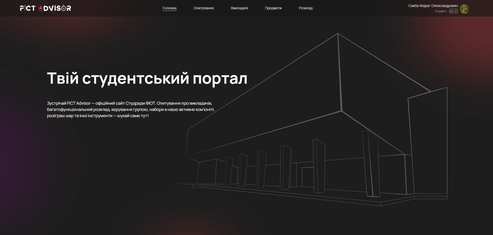

<section class="experience-section">
  <div class="row">
    <div class="col-1-of-2">
      <div class="description-box">
        <h1>FictAdvisor</h1>
        <p>
          FICT Advisor is more than just a student portal;
          it’s a vibrant hub where academic excellence meets community engagement.
          Designed with students in mind, it provides a seamless experience for managing schedule,
          checking available coursers and teachers related to them, and a main feature
          of accessing reviews about teachers from other students as well as placing them.
          As a developer a contribute to it's backend, manging business logic,
          provide great application programming interface for frontend developers.
        </p>
        <a href="https://fictadvisor.com/" class="btn btn--red">Explore</a>
        <a href="https://github.com/fictadvisor/fictadvisor" class="btn btn--red">Source code</a>
      </div>
    </div>
    <div class="col-1-of-2">
      <div class="img-box">
        
      </div>
    </div>
  </div>
</section>
